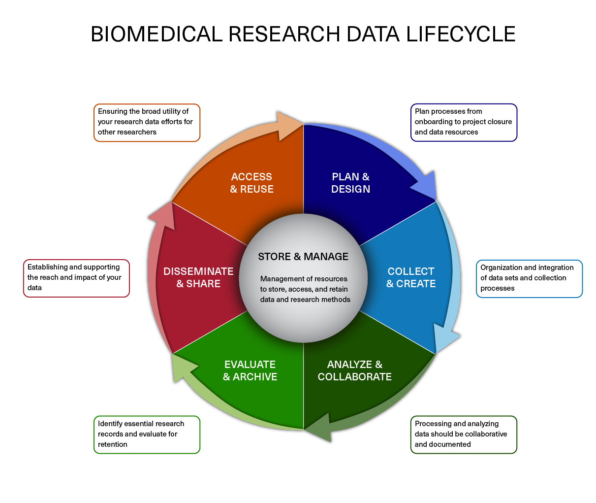

NOTE:
To make names more generalized for the next course, /data/Bspc-training/shared/rnaseq_jan2025 is now /data/Bspc-training/shared/rnaseq_mov10 . Make sure to edit any scripts that refer to the shared data!
Learning Objectives
- Explain the need for data management.
- Describe strategies for managing your own projects.
- Describe the example RNA-seq experiment and its objectives.
- Build on CLI skills from this week’s lessons to set up a organized work directory
What is data management?
In this course we teach you how to independently analyze your own sequencing data, so naturally we should begin with what what to do once you get the raw data back from the sequencing facility. Obviously, we begin with the analysis! Right?
Wrong.
One of the most important parts of research that involves large amounts of data is how best to manage it. Once data is generated we tend to prioritize the analysis. In the excitement to get a first look at new data, there are many important aspects that are often overlooked.
Wait, don’t leave this page just yet!
We know that data management can be hard to get excited about. However, ignoring it can be detrimental to your research. Here are just a few reasons why data management should matter to you:
- It will make your life easier. It’s easier to analyze organized, and well documented data.
- Your future self will thank you. Managing well from the get-go means it’s easier to retrieve at a later date.
- Data is precious. Thinking ahead about things like storage means you reduce risk of losing it.
- Funding agencies are increasingly mandating that research projects are developed with a data management plan.
Data Lifecycle
The data lifecycle displayed below, courtesy of the HMS Data Management Working Group, illustrates some things to consider beyond data creation and analysis. Below, we discuss components of the lifecycle and how they apply to any NGS experiment.

Image acquired from the Harvard Biomedical Data Management Website
Plan and Design
You should approach your sequencing project in a very similar way you do with any biological experiment, and ideally, begins with a good experimental design. You want to think about experiment at the outset and collect appropriate samples such that you have enough statistical power to make the comparisons you need. In a later lesson, we delve more into the details of planning and the experimental design considerations.
Planning for your computational work is just as important as planning when working on the bench. Every computational analysis you do is going to spawn many files and you will want to think about short-term storage options for your data and computational resources for analyzing it.
Collect and Create
The next step is preparing samples as required. During this stage it is important to keep track of how the experiment was performed, making sure to clearly document the source of starting materials and kits used. It is also best practice to include any information about any small variations within the experiment (across the different samples being prepared) or any changes relative to standard experiment protocols. This collection of information serves as the metadata of the experiment which will prove to be very useful during the analysis stage.
Analyze and Collaborate - our course will mostly focus on this portion of the life cycle!
Once you have the sequencing data back from the sequencing facility, it’s time to analyze it. The process of data analysis should be well documented to ensure reproducibility and also for ease of collaboration. We will spend some more time on this component of the lifecycle later in class, as it applies to our dataset.
Evaluate and Archive
When the analysis is complete you will want to think about which files are most pertinent to keep. Consider long-term storage options for your data that meet requirements of NIH, other funding agencies, and any guidelines from your institution.
Disseminate and share
The results of your analysis will hopefully generate some exciting findings that will be beneficial to the scientific community. At this stage in the lifecycle you rely on your previous steps of documentation to turn those notes into a clear and concise methods section of your manuscript.
Access and Reuse
In addition to sharing information on the analysis, you should plan for sharing the data. It has become increasingly common for researchers to make their data available to others when they complete a study. While a major reason for sharing is compliance (with journals or research funding organizations), there are also important research benefits including reproducibility and data sharing and reuse.
The Dataset
The dataset we are using for this workshop is part of a larger study described in Kenny PJ et al., Cell Rep 2014. The authors are investigating interactions between various genes involved in Fragile X syndrome, a disease of aberrant protein production, which results in cognitive impairment and autistic-like features. The authors sought to show that RNA helicase MOV10 regulates the translation of RNAs involved in Fragile X syndrome.
Raw data
From this study we are using the RNA-seq data which is publicly available in the Sequence Read Archive (SRA).
NOTE: If you are interested in how to obtain publicly available sequence data from the SRA, the Harvard HPC staff have created a lesson about this (note that it is not customized for Biowulf) linked here.
Metadata
In addition to the raw sequence data we also need to collect information about the data, also known as metadata. We are usually quick to want to begin analysis of the sequence data (FASTQ files), but how useful is it if we know nothing about the samples that this sequence data originated from?
Some relevant metadata for our dataset is provided below:
- The RNA was extracted from HEK293F cells that were transfected with a MOV10 transgene, MOV10 siRNA, or an irrelevant siRNA. (For this course we won’t be using the MOV10 knock down samples.)
- The libraries for this dataset are stranded and were generated using the standard Tru-seq prep kit (using the dUTP method).
- Sequencing was carried out on the Illumina HiSeq-2500 and 100bp single end reads were generated.
- The full dataset was sequenced to ~40 million reads per sample, but for this workshop we will be looking at a small subset on chr1 (~300,000 reads/sample).
- For each group we have three replicates as described in the figure below.

Exercise: Implementing data management best practices
Here, we implement some of those strategies to get ourselves setup before we begin with any analysis.
Are you logged into Biowulf, on a compute node, and in your course directory?
If not, first do that before proceeding!
As a reminder, the course directory is: /data/Bspc-training/$USER
Planning and organization
For each experiment you work on and analyze data for, it is considered best practice to get organized by creating a planned storage space (directory structure). We will start by creating a directory that we can use for the rest of the workshop. First, make sure that you are in your home directory.
$ cd /data/Bspc-training/$USER
From here, create the directory rnaseq and move into it.
$ mkdir rnaseq
$ cd rnaseq
Next, we will create a project directory and set up the following structure to keep our files organized.
rnaseq
├── logs
├── meta
├── raw_data
├── results
└── scripts
This is a generic structure and can be tweaked based on personal preference and the analysis workflow.
logs: to keep track of the commands run and the specific parameters used, but also to have a record of any standard output that is generated while running the command.meta: for any information that describes the samples you are using, which we refer to as metadata.raw_data: for any unmodified (raw) data obtained prior to computational analysis here, e.g. FASTQ files from the sequencing center. We strongly recommend leaving this directory unmodified through the analysis.results: for output from the different tools you implement in your workflow. Create sub-folders specific to each tool/step of the workflow within this folder.scripts: for scripts that you write and use to run analyses/workflow.
$ mkdir logs meta raw_data results scripts
File naming conventions
Another aspect of staying organized is making sure that all the directories and filenames for an analysis are as consistent as possible. You want to avoid names like
alignment1.bam, and rather have names like20170823_kd_rep1_gmap-1.4.bamwhich provide a basic level of information about the file. This link and this slideshow provided by Harvard HPC have some good guidelines for file naming dos and don’ts.
Documentation: Worklog and README files
In your lab notebook, you likely keep track of the different reagents and kits used for a specific protocol. Similarly, recording information about the tools used in the workflow is important for documenting your computational experiments.
Here are some things you might want to make a note of:
-
Make note of the software you use. Do your research and find out what tools are best for the data you are working with. Don’t just work with tools that you are able to easily install.
-
Keep track of software versions. Keep up with the literature and make sure you are using the most up-to-date versions.
-
Record information on parameters used and summary statistics at every step (e.g., how many adapters were removed, how many reads did not align)
-
Test datasets: A general rule of thumb is to test on a single sample or a subset of the data before running your entire dataset through. This will allow you to debug quicker and give you a chance to also get a feel for the tool and the different parameters.
-
Error and log messages: Different tools have different ways of reporting log messages to the terminal. You might have to experiment a bit to figure out what output to capture. You can redirect standard output with the
>symbol which is equivalent to1> (standard out); other tools might require you to use2>to re-direct thestandard errorinstead.
Creating a Worklog
The BSPC uses a Work Log for each project that they work on.
This is a file that lives in the top directory for a project (i.e. rnaseq in our case), and has the following attributes:
- Named
WORKLOG.rstto make it easy to find across projects - Use ReStructured Text format (
.rstfiles), because this allows for more flexible documentation and parsing down the line - Start each entry with a date, in YYYY-MM-DD format, underlined with hyphens
- Then a blank line
- Then your username prefixed with an \@
- Then arbitrary text describing what you did that day.
- Keeps everything in chronological order, so the latest entry is at the bottom
For example, the top of my Work Log for the rnaseq project looks like:
2024-10-03
----------
@changes
- Created directory structure, README, and Work Log
The audience is you (or another lab member) 2 years from now when everyone has forgotten about the project and now needs to start working on it again. As you are writing, it will feel like you are writing too much or adding way too much detail. You are not. The future you will thank you.
Feel free to keep an informal, conversational tone. This is not a public document. But do get in the habit of adding a note each time you work on a project!
README files
After setting up the directory structure it is useful to have a README file within your project directory. This is a plain text file containing a short summary about the project and a description of the files/directories found within it. An example README is shown below. It can also be helpful to include a README within each sub-directory with any information pertaining to the analysis.
## README ##
## This directory contains data generated during the Introduction to RNA-seq workshop
## Date:
There are five subdirectories in this directory:
raw_data : contains raw data
meta: contains...
logs:
results:
scripts:
Moving data into our new raw_data folder
Let’s populate the rnaseq/ project with some data.
We actually have the required files that we were manipulating in our previous few lessons.
Let’s mv these files into our raw_data directory.
$ mv unix_lesson/raw_fastq/*subset.fq raw_data/
If you were to run the tree command from inside the rnaseq directory it should now look like this:
rnaseq
├── logs
├── meta
├── raw_data
│ ├── Irrel_kd_1.subset.fq
│ ├── Irrel_kd_2.subset.fq
│ ├── Irrel_kd_3.subset.fq
│ ├── Mov10_oe_1.subset.fq
│ ├── Mov10_oe_2.subset.fq
│ └── Mov10_oe_3.subset.fq
├── README.txt
├── results
└── scripts
Assignment:
- Take a moment to create a README for the
rnaseq/folder (hint: usevimto create the file). Give a short description of the project and brief descriptions of the types of files you will be storing within each of the sub-directories. - Use the same strategy to create a
WORKLOG.rst fileand add your first entry about what you just accomplished.
Note: Message me on Slack when you’ve finished this lesson. I’ll look into your /rnaseq directory to see that you created the assigned directory structure and these two text files!
This lesson has been developed by members of the teaching team at the Harvard Chan Bioinformatics Core (HBC). These are open access materials distributed under the terms of the Creative Commons Attribution license (CC BY 4.0), which permits unrestricted use, distribution, and reproduction in any medium, provided the original author and source are credited.
- The materials used in this lesson were derived from work that is Copyright © Data Carpentry (http://datacarpentry.org/). All Data Carpentry instructional material is made available under the Creative Commons Attribution license (CC BY 4.0).
- Adapted from the lesson by Tracy Teal. Original contributors: Paul Wilson, Milad Fatenejad, Sasha Wood and Radhika Khetani for Software Carpentry (http://software-carpentry.org/)